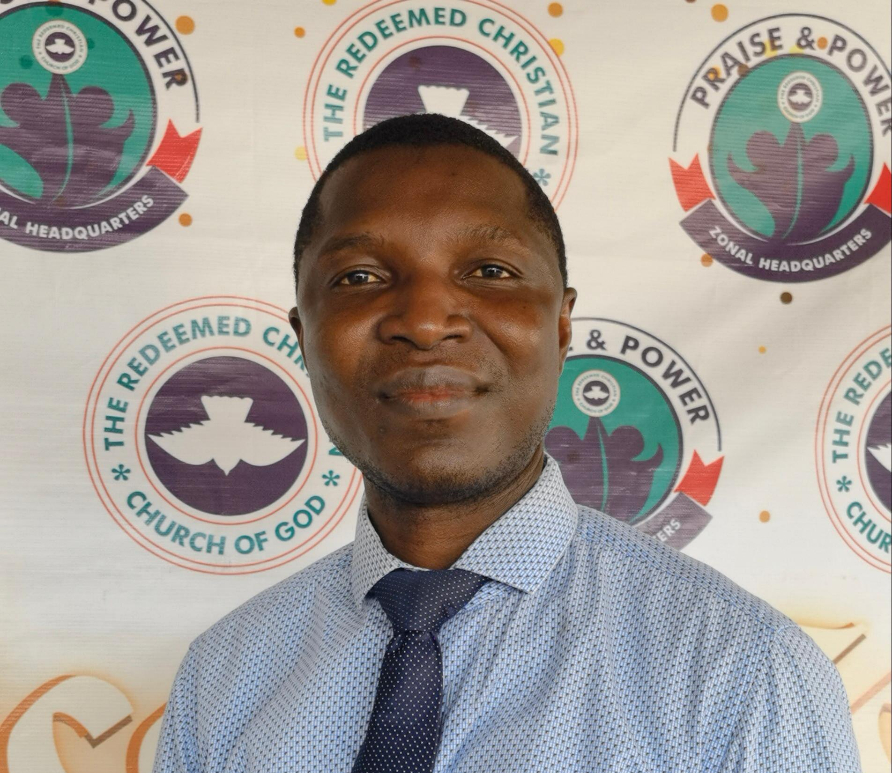
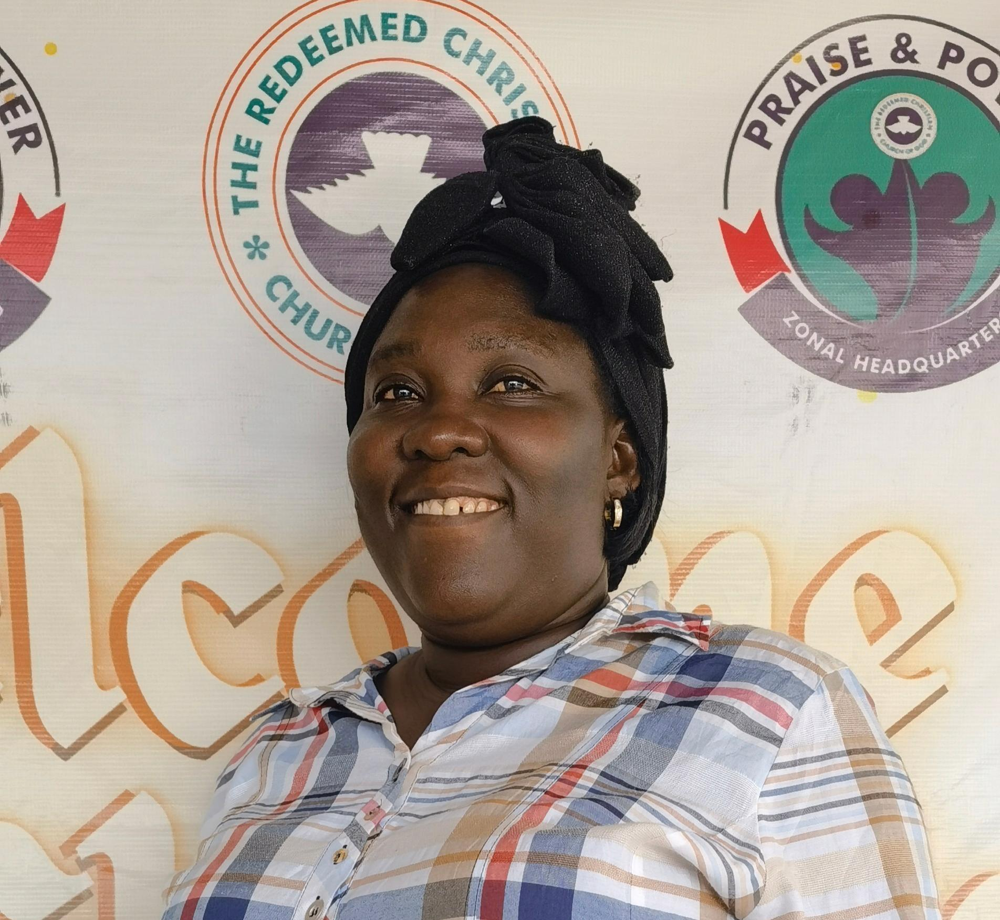

Zonal Pastor
Zonal PastorPraise and Power Zonal Headquarters
Pastor Olusegun Ogunsanwo
Zonal Pastor
A man of God whose life is defined by prayer, the Word, and a passion to see every soul reach their full potential in Christ.
Our pastor
Meet the team
Shepherding the flock
Called to lead, love, and serve this house with integrity and excellence.
Zonal PastorServing with excellence
These dedicated servants keep our house running with grace, order, and love.

01Name to be added
Welcoming every person with warmth and helping services run smoothly.

02Name to be added
Building a strong foundation of faith in the hearts of the little ones.
 03
03Pst. Silas Akinsipe
Amplifying the voice of the church through creative and digital excellence.
 04
04Pst. Remi Jibodu
Serving the house with order, dignity, and a spirit of excellence.
 05
05Sis. Helen Delight
Helping the church lift its voice in praise and worship.
Name to be added
Maintaining a safe and orderly environment for every worship experience.
Name to be added
Supporting the church and community through committed prayer.
Name to be added
Overseeing the care and upkeep of our church facilities.
Grow with us
We would love to help you connect with a ministry team.